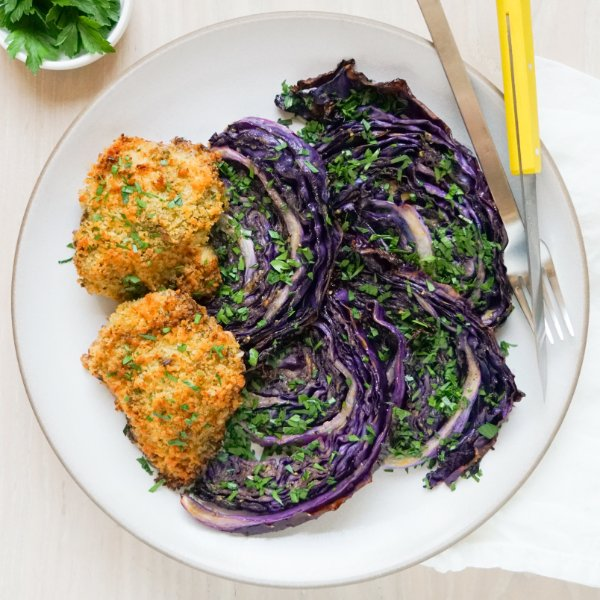

Crispy Chicken Thighs & Maple-Mustard Roast Red Cabbage with Parsley

Nutrition (per serving)
700.8 kcalCalories
50.4 gProtein
31.7 gCarbs
41.5 gFat
Full nutrition table
| Calories | 700.8 kcal |
| Total fat | 41.5 g |
| Saturated fat | 7.2 g |
| Trans fat | 0.1 g |
| Cholesterol | 222.3 mg |
| Sodium | 406.2 mg |
| Carbohydrates | 31.7 g |
| Fiber | 5.1 g |
| Sugars | 13.1 g |
| Protein | 50.4 g |
| Potassium | 1086.3 mg |
| Calcium | 160.3 mg |
| Iron | 5.6 mg |
| Vitamin A | 284.1 IU |
| Vitamin C | 103.2 mg |
| Vitamin D | 4.1 IU |
Cookware
Ingredients
- 2 lbchicken thighs, boneless skinless
- 2 clovesgarlic
- 1 small bunchItalian (flat-leaf) parsley
- 1 small headred cabbage
- black pepper
- Dijon mustard
- extra virgin olive oil
- mayonnaise
- panko bread crumbs
- pure maple syrup
- salt
- thyme, dried
Steps
- Preheat oven to 450°F.
- Wash and dry cabbage; halve lengthwise, cut out the core, and slice crosswise into 1-inch thick wedges. Transfer to a large baking sheet pan.1 small head red cabbage
- Place oil, Dijon, maple syrup, salt, and pepper in a small bowl. Stir to combine the glaze.¼ cup extra virgin olive oil
¼ cup Dijon mustard
2 tbsp pure maple syrup
1 tsp salt
½ tsp black pepper - Spread half of the glaze over the top side of the cabbage wedges. Carefully flip wedges and repeat with remaining glaze. (Reserve bowl for later use.)
- Place baking sheet in the oven (it doesn't have to be fully heated) and roast until cabbage is golden brown and tender, about 25 minutes. Remove from oven.
- Meanwhile, wash, dry, and shave parsley leaves off the stems; discard stems and mince the leaves. Place half in the reserved bowl. (Set aside remaining parsley for serving.)1 small bunch Italian (flat-leaf) parsley
- Peel and mince garlic. Add to the bowl with the parsley along with mayo, Dijon, and thyme, then stir to combine.2 cloves garlic
¼ cup mayonnaise
2 tbsp Dijon mustard
½ tsp thyme, dried - Pat chicken dry with paper towels, then season with salt and pepper on both sides. Transfer to a large baking dish.2 lb chicken thighs, boneless skinless
1 tsp salt
½ tsp black pepper - Spread Dijon mayo over the top side of the chicken, then sprinkle with bread crumbs, pressing gently to adhere. Drizzle with oil.1 cup panko bread crumbs
4 tsp extra virgin olive oil - Add baking dish to the oven and roast until chicken is golden and cooked through, 18-20 minutes. Remove from oven.
- To serve, divide cabbage and chicken between plates; top with reserved parsley. Enjoy!